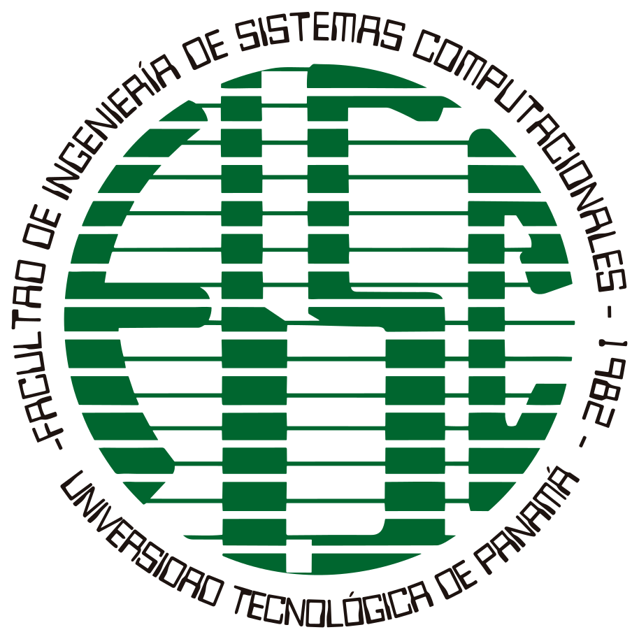

Proyectos académicos
Desarrollo de ejercicios y proyectos académicos para poner en práctica conocimientos de programación y desarrollo de software.
Rol: Estudiante y desarrollador
Tecnologías: Por definir según el proyecto
Estudiante de Desarrollo y Gestión de Software

Soy David Carrion, estudiante de la Licenciatura en Desarrollo y Gestión de Software de la Universidad Tecnológica de Panamá. Me interesa aprender sobre programación, desarrollo web y tecnologías que permitan crear soluciones útiles. Actualmente estoy fortaleciendo mis conocimientos y habilidades mediante proyectos y actividades académicas.
Desarrollo de ejercicios y proyectos académicos para poner en práctica conocimientos de programación y desarrollo de software.
Rol: Estudiante y desarrollador
Tecnologías: Por definir según el proyecto
Desarrollo de actividades y prácticas académicas relacionadas con la programación y la gestión de software.